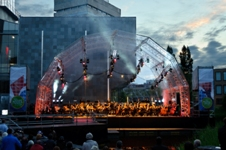
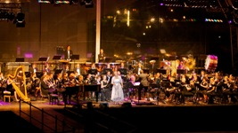
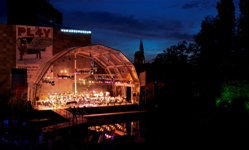

Perscontact
Voor meer informatie kunt u contact opnemen met de organisatie.
Stichting CultuurConnectie
Postbus 1334
5602 BH EINDHOVEN
| t | 06-17236350 |
| e | |
| w | www.muziekopdedommel.nl |
Persberichten:
Persfoto's hoge resolutie:
Bij publicatie fotograaf vermelden aub.
|  |
|  |
|  |